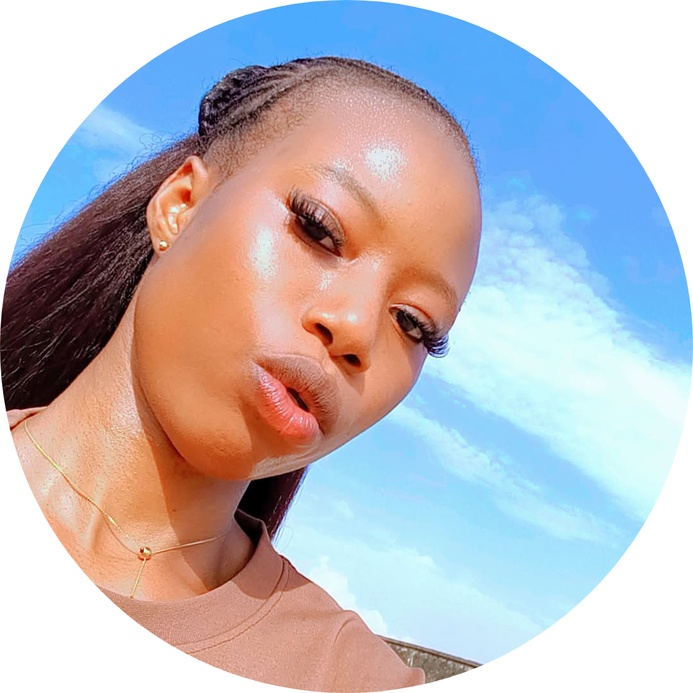

A short biography
I'm a first-year student at Your University, studying Computer Science. I love front-end development, user-friendly design, and solving problems with code. When I'm not coding, I'm sketching interfaces or exploring new tech.
Welcome to my portfolio. I'm a Computer Science student who enjoys turning ideas into clean, useful web experiences. Browse my work, plan your week with my academic planner, or say hello.

I'm a first-year student at Your University, studying Computer Science. I love front-end development, user-friendly design, and solving problems with code. When I'm not coding, I'm sketching interfaces or exploring new tech.